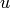
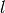
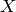
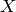
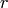
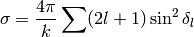

Examples¶
Two Particles in Harmonic Potential¶
It is a 1D, two-body problem with an interacting Hamiltonian
and it can be solved analytically. The Schrödinger equation is
we use the substitution:
then
and
Note also the symmetry of the Hamiltonian which after substitution is equivalent to . Now we can separate the equation:

the solution of the second equation is:
where are the Hermite polynomials:

The solution to the first equation can be approximated around the minimum of the potential, which occurs at point (since the potential is symmetric with respect to , we only treat the branch ):
So the first few states can be approximated by the harmonic oscillator solution with frequency :
The final solution is then:
Quantum Harmonic Oscillator¶
The quantum harmonic oscillator for one particle in 1D is:
This is a partial differential equation for the time evolution of the wave function , but one method to solve it is the eigenvalues expansion:
where the sum goes over the whole spectrum (for continuous spectrum the sum turns into an integral), the coefficients are determined from the initial condition and satisfies the one dimensional one particle time independent Schrödinger equation:
and this is just an ODE and thus can be solved with Hermes1D. There can be many
types of boundary conditions for this equation, depending on the physical
problem, but in our case we simply have and
the normalization condition  .
.
We can set and from now on we’ll just write  instead of
:
instead of
:
and we will solve it on the interval with the boundary condition . The weak formulation is
but due to the boundary condition so and we get
And the finite element formulation is then and :
which is a generalized eigenvalue problem:
with
Radial Schrödinger Equation¶
Another important example is the three dimensional one particle time independent Schrödinger equation for a spherically symmetric potential:
The way to solve it is to separate the equation into radial and angular parts by writing the Laplace operator in spherical coordinates as:
Substituting into the Schrödinger equation yields:
Using the fact that we can cancel and we get the radial Schrödinger equation:
The solution is then:
where satisfies the radial Schrödinger equation (from now on we just write ):
Again there are many types of boundary conditions, but the most common case is
and or . One solves this equation on
the interval for large enough  .
.
The procedure is similar to the previous example, only we need to remember that we always have to use covariant integration (in the previous example the covariant integration was the same as the coordinate integration), in this case , so the weak formulation is:
Integrating over the angles gives which we cancel out at both sides and we get:
We apply per partes to the first two terms on the left hand side:
We used the fact that . If we also prescribe the boundary condition , then the boundary term vanishes completely. The weak formulation is then:
or
Another approach¶
Another (equivalent) approach is to write a weak formulation for the 3D problem in cartesian coordinates:
and only then transform to spherical coordinates:
The 3d eigenvectors however are not spherically symmetric. Nevertheless we can still proceed by choosing our basis as
and seek our solution as

Using the properties of spherical harmonics and the gradient:
the weak formulation becomes:

where both  and  indices are given by the indices of the particular base
function . The  term is (schematically):
indices are given by the indices of the particular base
function . The  term is (schematically):
There is an interesting identity:
But it cannot be applied, because we have one more  in the expression. Nevertheless the term is probably zero, as can be seen when we compare the weak formulation to the one we got directly from the radial equation.
How Not To Derive The Weak Formulation¶
If we forgot that we have to integrate covariantly, this section is devoted to what happens if we integrate using the coordinate integration. We would get:
Notice the matrix on the left hand side is not symmetric. There is another way of writing the weak formulation by applying per-partes to the term:
We can use and to simplify a bit:
Since near , we can see that for the limits on the right hand side are zero, but for they are not zero and need to be taken into account. Let’s assume for now, then our weak formulation looks like:
or
The left hand side is also not symmetric, however we can now take an average of our both weak formulations to get a symmetric weak formulation:
Keep in mind, that this symmetric version is only correct for . For we need to use our first nonsymmetric version.
As you can see, this is something very different to what we got in the previous section. First there were lots of technical difficulties and second the final result is wrong, since it doesn’t correspond to the 3D Schrödinger equation.
Scattering in radial potential¶
If , the radial equation is:
The general solution is a linear combination of the spherical Bessel functions
 and , whose asymptotic expansion for is:
and , whose asymptotic expansion for is:
so we get for large :
where
We can then compare this to , by expanding :
Since and integrating over we get the total cross section:

In order to find the phase shifts , we solve the radial equation for the full potential
and then fit it to the above asymptotic solution for V=0. We require that the value and the slope must be continuous. In particular, we take the logarithmic derivative () at the point :
expressing using and solving for it we get:
Now we can use these in the formula for the total cross section.
The problem can now be formulated in two ways. Either to solve the radial equation for a potential with finite reach and then “measure” those phase shifts in the solution. Or by prescribing those phase shifts and we now need to calculate the solutions (e.g. the energies) from the radial equation.